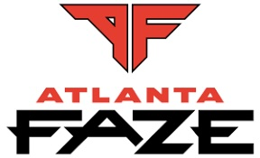

Atlanta FaZe is one of the most successful teams in the Call of Duty League. Known for their relentless aggression and strategic mastery, they are a powerhouse in the competitive scene. Location: Atlanta, Georgia Key Players: Simp, aBeZy, Cellium, SlasheR Achievements: Multiple CDL Championships, MVP Awards, and a dominant win rate.

Toronto Ultra
The Toronto Ultra are a team driven by passion and innovation. They consistently showcase their talent with strategic gameplay and exceptional teamwork. Location: Toronto, Canada Key Players: Beans, Cleanx, Insight, Joedeceives Achievements: Multiple CDL Winnings, fan awards, and recognition for their spirited performances.
OpTic Texas
OpTic Texas is a legendary team in the Call of Duty League with a rich history of success. Renowned for their loyal fan base and iconic players, they remain a formidable force. Location: Dallas, Texas Key Players: Scump (Retired), Dashy, Shotzzy, iLLeY Achievements: CDL Championship titles, X Games gold medals, and groundbreaking performances in esports history.